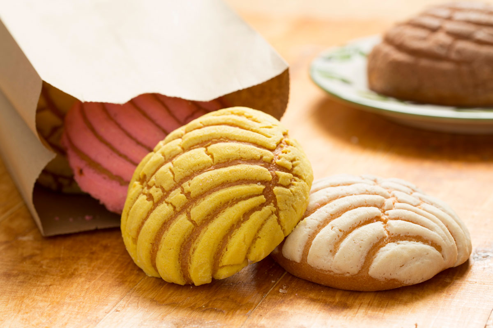
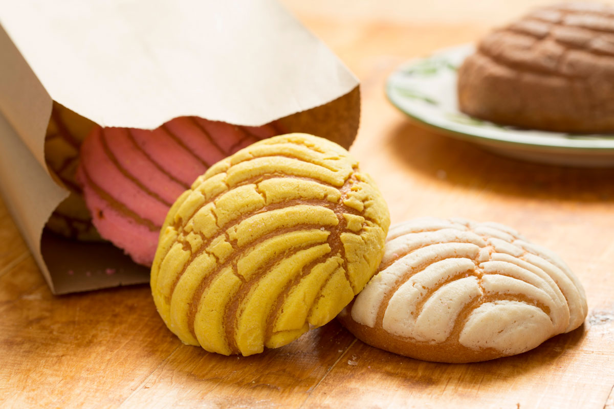

Conchas are a bread like food as are so many others from mexico, they have a long history spanning back to mexicos
pre-coloinal era with French bakers and Spanish farmers. as spain soon started a farming of wheat in the americas
demand for the bread rose, and as french bakers came in due to the profit chance with this demand they added there
own touch. Soon around the 19th century the modern Concha was devloped and now it is enjoyed all throughout the world
as a sugary treat.
Recipie for the concha
A standard Recipie that should get you about 16 conchas
500 grams (about 3 ¾ cups) of all-purpose flour
125 grams (about ½ cup and two tablespoons) of white granulated sugar
7.5 grams (2 ½ teaspoons) of instant dry yeast
3 grams (½ teaspoon) of salt
100 grams (about ½ cup) of unsalted butter at room temperature
5 milliliter (1 teaspoon) of vanilla extract
120 milliliter (½ cup) of warm milk
Directions on what to do
In the bowl of a stand electric mixer, combine the all-purpose flour, yeast, sugar, and salt on medium speed
Add butter, eggs, and vanilla extract, and gently pour in the milk until the dough comes together while beating with the hook attachment in a stand mixer
Continue to beat the mixture at medium speed for another 7 minutesContinue to beat the mixture at medium speed for another 7 minutes
Add a dusting of flour to the bowl’s interior, barely enough to remove the dough from the tub. The dough should be mildly sticky, soft, smooth, and elastic to the touch
Knead the conchas dough on a floured surface just long enough to form a ball
Place the ball in a big greased bowl, then cover it in plastic wrap (or wax paper) and a kitchen napkin to keep it warm
Allow the dough to rise for around 2 hours in a warm position until it has doubled in size and your concha should be done
 
